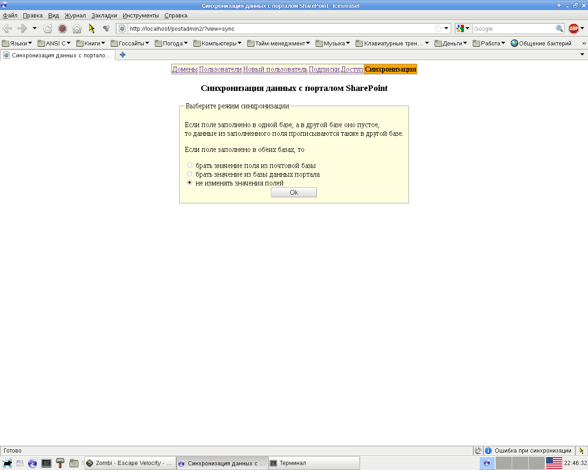

Обещал выложить свой веб-интерфейс для управления почтовым сервером, так вот - он тут.
Вы можете спросить: "Чем оно лучше PostfixAdmin?" У этих программ разное назначение. Если вам нужно средство для управления почтовым хостингом, то PostfixAdmin для вас. Если же вам нужно средство управления корпоративным почтовым сервером, то я считаю свою программу более подходящей для этого.
Чего нет в моей программе, в отличие от PostfixAdmin:
Что есть в моей программе такого, чего нет в PostfixAdmin:
Ну и кроме того:
Скриншоты, чтобы дать представление об интерфейсе.
Список доменов и транспортов:
Редактирование домена и транспорта:
Список пользователей-почтовых ящиков:
Редактирование пользователя-почтового ящика:
Добавление нового пользователя-почтового ящика:
Таблица списков рассылок/псевдонимов/подписок:
Редактирование списков управления доступом SMTP-сервера:
Редактирование отдельного правила:
Синхронизация информации о пользователях с порталом MS SharePoint Services 3.0:
Более подробные (но не пошаговые и "на пальцах") инструкции по настройке находятся в самом архиве, в файле README.
Как я уже говорил здесь: http://morbow.blogspot.com/2012/03/blog-post.html, в дальнейшей разработке этого веб-интерфейса я пока не заинтересован. Если кого-то заинтересует этот веб-интерфейс, я готов ответить на вопросы по нему по почте vladimir@stupin.su. Если кто-то напишет для программы какую-то дополнительную функциональность - прошу поделиться, если не жалко :)
P.S. Переписал программу на Perl с использованием шаблонизатора HTML::Template и фреймворка Dancer. Почитать о ней можно тут: Postadmin 2.